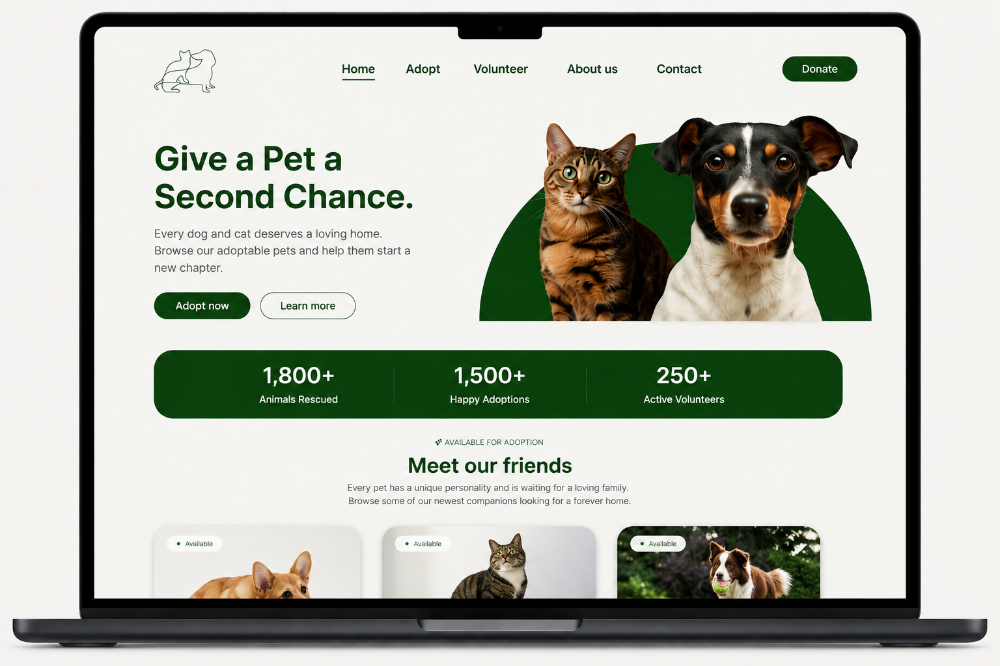
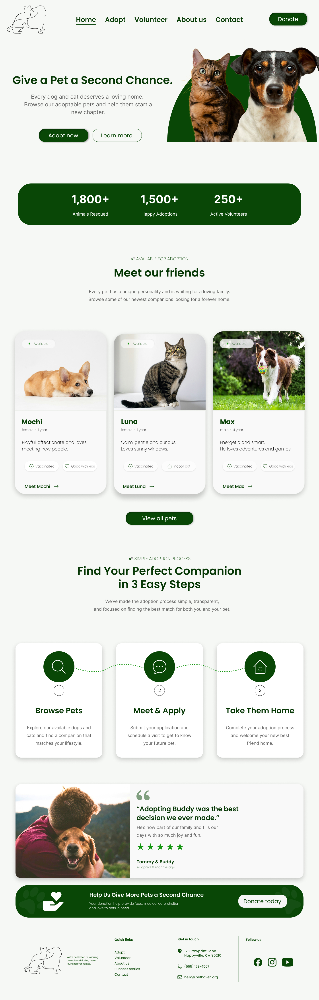

DESIGN PRACTICE
A responsive animal adoption website designed to create a warm, friendly, and easy-to-navigate experience for potential adopters.

Pet Haven is a fictional animal adoption platform created as a web design exercise. The goal was to create a welcoming digital experience that makes discovering adoptable animals feel simple and approachable.
The visual direction combines soft neutral backgrounds with deep green accents to create a calm and trustworthy feeling. Large animal photography, rounded cards, clear typography, and simple calls to action keep the interface friendly and easy to scan.

This exercise focused on creating a visual identity and interface that communicate warmth and trust while keeping the adoption journey clear and approachable.